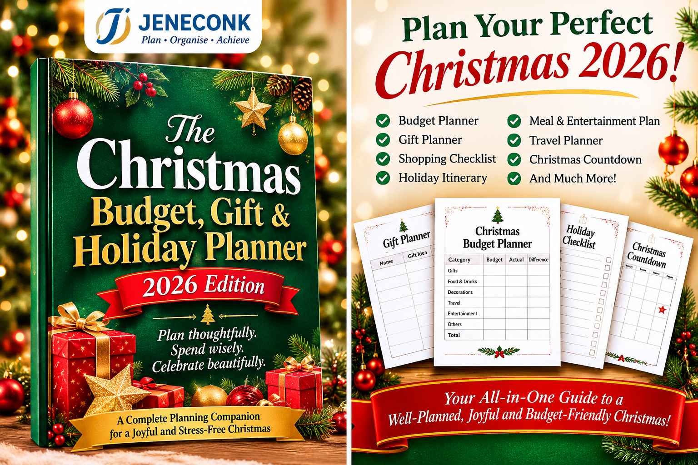

Quick answer: Include gifts, food and drinks, decorations, travel, hosting, delivery and last-minute costs in your Christmas budget. Set one affordable total first, assign a limit to each category, and keep a small reserve for costs you could not predict. A written plan makes it easier to compare prices and stop when the limit is reached.
Use this guide as a planning checklist. The suggested categories are prompts, not a requirement to spend in every area. Your Christmas budget should reflect your household, commitments, local prices and available income.
The 7 Christmas expenses to budget for
1. Gifts and thank-you presents
Gift spending can expand quickly when you add extended family, friends, colleagues, teachers, neighbours and hosts. Write down the people you genuinely plan to buy for, choose a maximum amount for each gift, and total the list before you shop. Consider shared family gifts, thoughtful low-cost options or a spending agreement when that suits the people involved.
Include wrapping paper, gift bags, cards and any postage in the gift category. A present that fits the budget but requires expensive packaging or delivery may cost more than expected.
2. Food, drinks and groceries
Plan meals and gatherings before buying ingredients. List the number of people, the meals you will prepare and what you already have in the pantry. Separate everyday groceries from special-occasion items so the holiday shop does not make it hard to see where the extra spending is going.
Account for drinks, snacks, desserts, cooking fuel and any ingredients that are likely to be more expensive or harder to find closer to the holiday. Compare unit prices where available, and avoid buying quantities that may go to waste.
3. Decorations and seasonal household items
Check the decorations and supplies you already own before buying more. Set a limit for items such as a tree, lights, ornaments, table settings and replacement bulbs. If lights or powered decorations are part of your display, consider their running cost as well as the purchase price.
Choose what will make the home feel festive for your household. Reusing, repairing or adding a few carefully chosen pieces can keep this category manageable.
4. Travel and local transport
Travel may include intercity tickets, fuel, local transport, parking, tolls and extra trips for shopping or visiting family. Estimate the full round trip, not just the main ticket or fuel cost. If travel dates are flexible, comparing options early may give you more choices.
Group errands where practical and discuss shared transport costs with other travellers. If a visit or trip is optional, decide how it fits the total budget before making a commitment.
5. Hosting, meals out and entertainment
Hosting has costs beyond the main meal: cleaning supplies, ice, extra seating, serving items, games and activities for children or guests. For a gathering, plan the menu and decide whether guests will contribute a dish or drink. Agreeing this in advance helps avoid rushed purchases on the day.
Budget separately for restaurant visits, events and outings. These can be enjoyable parts of the season, but the total may be easy to underestimate when each purchase feels small.
6. Delivery, service charges and convenience costs
Delivery fees, online marketplace charges, express shipping, courier services and convenience purchases are often overlooked because they appear at checkout. Add them to the item they belong to or track them in their own line so the final amount reflects what you actually paid.
Compare delivery with collection, combine orders when it is safe and practical, and leave enough time for standard shipping if the item is needed by a certain date.
7. Last-minute and unexpected costs
Seasonal plans change. A forgotten ingredient, a replacement gift, a small repair, an extra guest or a delayed trip can create additional spending. Set aside a modest reserve that is part of your total budget. The amount depends on what you can afford; it should not be financed with money needed for essential bills.
If the reserve is not used, keep it or put it toward a priority rather than treating it as permission to add unplanned purchases.
Make a Christmas budget that adds up
- Choose the total first. Base it on money available after essential household costs, debt repayments and existing obligations.
- List commitments. Record trips, gatherings and gifts you have already agreed to cover.
- Set category limits. Allocate amounts to each of the seven groups, including a reserve.
- Check the total. If the category amounts exceed your limit, adjust optional plans before shopping starts.
- Track actual spending. Record purchases as you make them and compare them with each limit.
- Review weekly. Move money between categories only when you understand what you are giving up elsewhere.
Simple calculation: Remaining amount = category budget − actual spending. If the result is below zero, pause that category and review the overall plan before spending more.
Christmas budget checklist
| Expense | Questions to ask before spending | Track |
|---|---|---|
| Gifts | Who is on the list? What is the limit per person? Have wrapping and delivery been included? | Budget / actual |
| Food and drinks | How many people and meals? What is already at home? Are fuel and snacks included? | Budget / actual |
| Decorations | What can be reused? What needs replacing? Is there an ongoing electricity cost? | Budget / actual |
| Travel | Are tickets, fuel, local transport, parking and extra errands included? | Budget / actual |
| Hosting and entertainment | Are guest contributions clear? Have outings and activities been counted? | Budget / actual |
| Delivery and charges | Are courier, service, express and online order fees included? | Budget / actual |
| Last-minute reserve | What amount can be set aside without affecting essential bills? | Set aside / used |

Common Christmas budgeting mistakes to avoid
- Starting with purchases instead of a total. Decide what the household can afford before browsing deals.
- Counting only gifts. Food, transport, hosting and fees can rival the planned gift spend.
- Ignoring existing commitments. Include regular bills and repayments before assigning money to seasonal extras.
- Forgetting small transactions. Snacks, parking and delivery fees still count; record them as they happen.
- Using credit without a repayment plan. A discounted item can still create future pressure if the balance cannot be repaid.
- Changing limits without checking the total. Increasing one category means reducing another or revisiting the overall amount.
Use a planner to keep the whole season visible
A list or spreadsheet can work well if you maintain it. If you prefer one organised place for the moving parts, The Christmas Budget, Gift & Holiday Planner: 2026 Edition brings budgeting, gifts, shopping, meals and entertainment, travel, a holiday itinerary and a Christmas countdown into one planning companion.
Choose the format that fits how you plan and confirm the product details on the seller page before purchase.
Plan thoughtfully. Spend wisely. Celebrate beautifully.
Explore the all-in-one Christmas planner for budget tracking, gift ideas, shopping checklists, meal and entertainment plans, travel planning, a holiday itinerary and a Christmas countdown.
View the Christmas Planner on SelarFrequently asked questions
What Christmas expenses should I budget for first?
Start with essential travel, food for planned gatherings and gifts you have already committed to buy. Then set limits for decorations, hosting, delivery and optional activities, and reserve a small amount for unexpected costs.
How much should I save for Christmas?
There is no single amount that fits every household. Choose a total your regular income can support after essential bills and existing obligations, then divide it across expense categories and the weeks remaining before Christmas.
How can I avoid overspending at Christmas?
Set a total spending limit before shopping, write category limits, track actual costs against the plan, compare prices and decide in advance what to cut if the budget is running out. Avoid borrowing for optional seasonal purchases when repayment would strain later income.
For more practical resources, browse the JENECONK Learning Resource Center or return to the JENECONK homepage.